HOWTO REPAIR ANY CABLE FROM A FOREARM or HAND - VERSION 1¶
1 OVERVIEW¶
Let's have an overview of the mechanical CAD from different view angles.
| Left Forearm V1 | Right Forearm V1 |
|---|---|
| 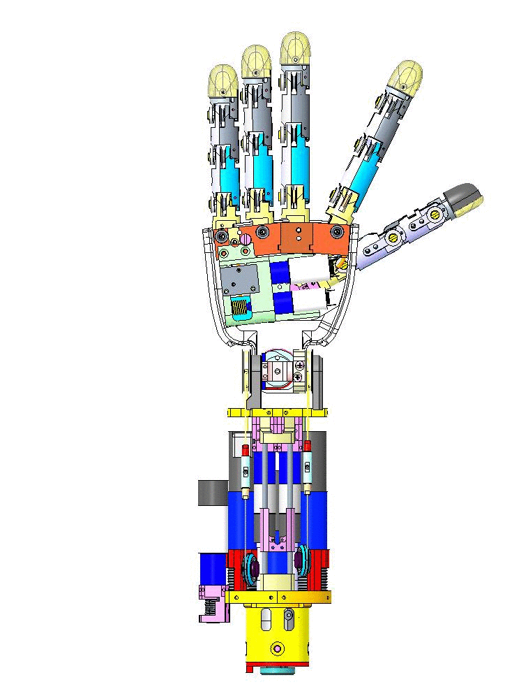 | 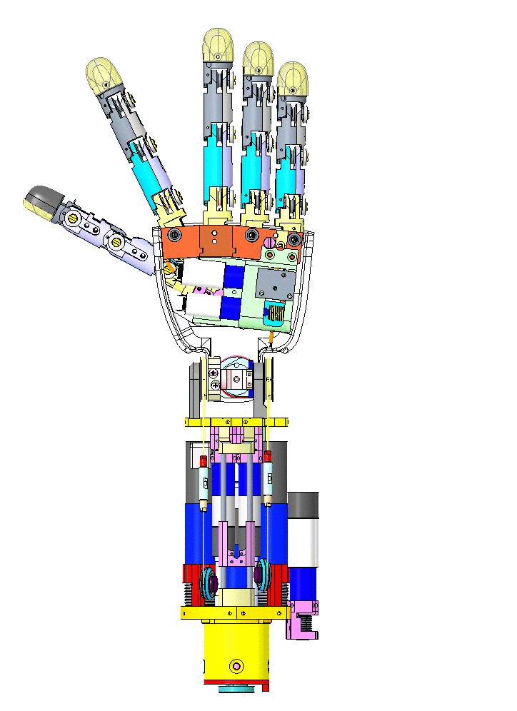 |
1.1 Rules of Thumb for a good start:¶
1 - Visual inspection (remove the covers - around the forearm and above the hand - and check for broken cables)
2 - Identification (which part needs to be repaired)
3 - Cleaning and Removing the broken cable
2 Distal Joints¶
There are 2 types of distal Joints on this version of the forearm:
- The ones which go inside a motor shaft to get anchored and, as soon as the motor is spinning, the cable rolls around the pulley and closes the joint. Those motors are perfectly identical - only the positions differ:
Thumb, Index & Middle fingers
- The ones which are attached to the slider:
Ring and Pinkie fingers
2.1 Location¶
| WHERE | JOINT | POSITION |
|---|---|---|
 |
Thumb distal | easy to find: no slider above or hiding it. It is also right next to the motor with the cage |
 |
Index and Middle | they are located beneath the slider (other side of the wrist, external) |
 |
Ring and Pinkie | they are attached onto the moving part of the slider (internal) |
WATCH OUT
FOR the Left forearm : the motor positions are "mirrored" respect to the right ones.
2.2 Cabling¶
2.2.1 Preparation¶
The minimum requirement to start recabling:
| IITCODE | Alias | Description |
|---|---|---|
| 2391 | U7194561 | Stainless steel micro cable, cable construction 7x19mm, nom. dia 0.45mm, outer dia 0.61mm, Polyamide coated, AISI 316 - CARL STAHL GMBH |
2.2.2 Knot creation¶
| STEP BY STEP GUIDE FOR A GOOD KNOT | |
|---|---|
 |
Start by cutting one piece of 40cm from the cable IITCODE 2391. Make a knot at one extremity. |
 |
use 2 pliers to close it hard. The plier closest to the knot is just opened-free to let the cable to run over it but is here to block the knot, the second one pull the cable to tighten the knot. Place the pliers on the same side, in order to not damage the cable. |
 |
drop a tear of glue on the knot and dry it. REMOVE the excess with a tissue - double check that the knot is perfectly dry before to proceed. |
 |
cut the excess of cable |
 |
FINISHED!!! |
| Insert the knot until it remains inside the socket of the pulley | |
|---|---|
 |
 |
2.2.3 Thumb¶
Here you can find a procedure for recabling the Thumb Distal Joint of the right hand of the robot.
WATCH OUT
FOR the Left forearm : the motor positions are "mirrored" respect to the right ones.
| Pictures | step by step guide |
|---|---|
| 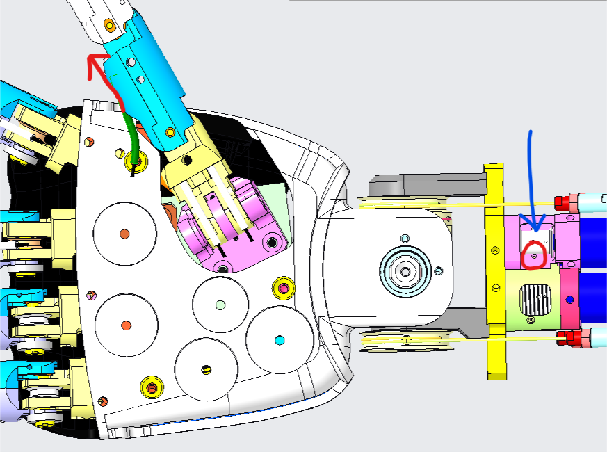 | In order to recable this joint, just insert the new cable IN side the hole (red circle - blue arrow) - the hole is in the internal side of the pulley cage. Once inserted, the cable should get OUT at the base of the phalange (red arrow). |
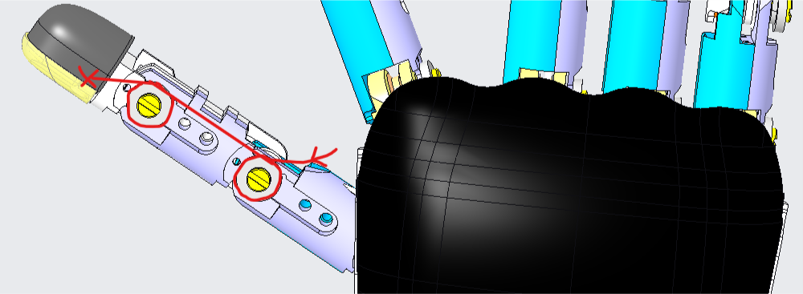  |
From the base of the phalange, insert the cable in the two pulleys following the path (red), ensuring that the cable remains parallel while looping (see bottom picture). |
| For closing the cable, make it exit from the hole at the base of the nail and secure it in its socket with a knot 1-2cm away from the exit of the nail. | |
 |
By using a flat screwdriver the size of the throat, turning it the direction shown above (front view of the hand with palm down): you should be able to see the cable get sucked up until finally you can see the finger closing entirely. |
| Make sure the finger can easily get closed and opened by turning CW and CCW from mid range closing. | |
| FINISHED!!! |
2.2.4 Index or Middle¶
Here you can find a procedure for recabling the Index or Middle Distal Joints of the right hand of the robot.
WATCH OUT
FOR the Left forearm : the motor positions are "mirrored" respect to the right ones.
| Pictures | step by step guide |
|---|---|
 |
You must consider to move away the slider which covers both motors, to be able to see clearly the hole where the cable will go - for that purpose, please remove the 4 screws indicated in the picture. |
 |
After having removed the screws you should be able to move sideways the slider, being able more easily to fit the cable into the retaining socket, but mainly see both internal holes (blue circle for middle distal and red circle for index distal). |
| Put the cable inside the correct hole, depending on which cable you are going to restore (middle finger - red hole & index finger - blue hole). | |
| 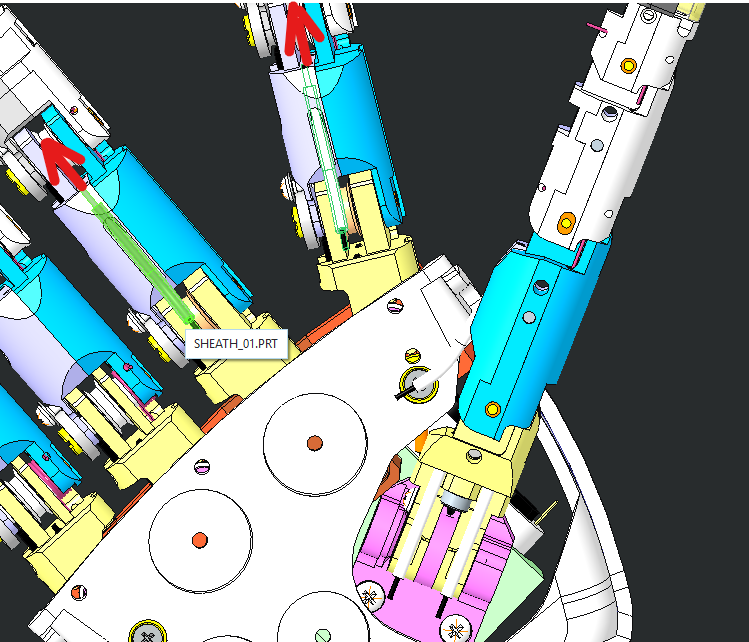 | Push it until it gets OUT from the base of the first phalange of either index or middle depending on the cable you want to fix. |
 |
Twin the cable as shown and make a knot 1-2cm away from the exit of the nail. |
|
By using a flat screwdriver the size of the throat, turning it the direction shown above (front view of the hand with palm down): you should be able to see the cable get sucked up until finally you can see the finger closing entirely. |
| Make sure the finger can easily get closed and opened by turning CW and CCW from mid range closing. | |
| FINISHED!!! |
2.2.5 Ring and Pinkie¶
These 2 fingers actually form a single distal joint and are in fact driven by a single motor.
Note
Those fingers need to be done together in order to make sure that both cable close simultaneously.
The 2 fingers are so actuated by 3 wires - 2 for the distal cables inside the fingers and 1 inside the motor shaft which moves the slider. For each cabling please follow the procedures below.
2.2.5a Cabling for the fingers¶
| Pictures | step by step guide |
|---|---|
| 1. Prepare 2 cables of 40 cm of IITCODE 2391 and make sure you make the knot as taught above | |
|
2. The starting points of the cabling are the 2 holes of the slider |
 |
3 .pass both cables inside the parallel holes |
 |
4. the exit of both cables is at the base of the phalange |
 |
5. cable routing (same rules as other fingers). To be able to pass the cable at the base of the nail it is important to create space by removing the nail (plastic cover) and moving forward the fingertip for 1 cm from its base. |
| 6. please write with a marker at the base of the nails where the knot should be in order to have a perfect synchronous closing for both fingers. | |
| 7. Now close manually the 2 fingers to get some slack to the cable and pull it out a bit to see where you should create the knot - at the very end of the mark on the cable. | |
| 8. If you did good, when releasing the fingers they should be symmetrical | |
| FINISHED!!! |
2.2.5b Cabling for the motor side¶
Here you can find the procedure for the cabling of the motor side - responsible for the slider movement:
| Pictures | Steb by step guide |
|---|---|
| 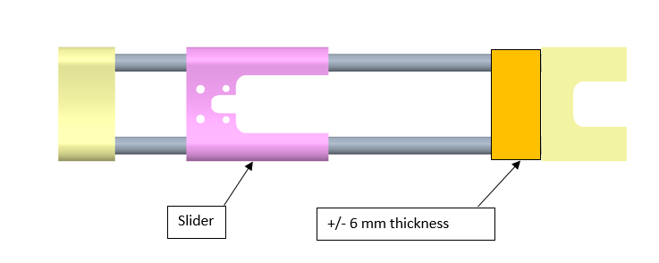 | Put an about 6 mm thickness piece in between the slider and the Ergal part (yellow). |
| Take one meter of cable IITCODE 1815 and start cabling along the pulley with cage already on: - 1 turn around the pulley for the motor side - 3 turns around pulley for the ball bearing side Make sure that the cables goes out of the pulley from both holes tangentially to the pulley. |
|
| Insert the sheaths 0+S (ball bearing side) and 0-S (motor side). | |
| 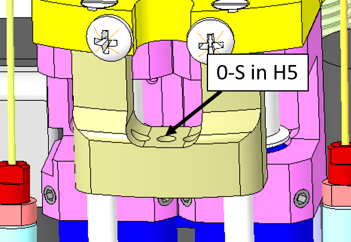 | Assembly the motor passing the cable with 0-S sheath in the Ergal part - central hole, hand side (H5). |
| 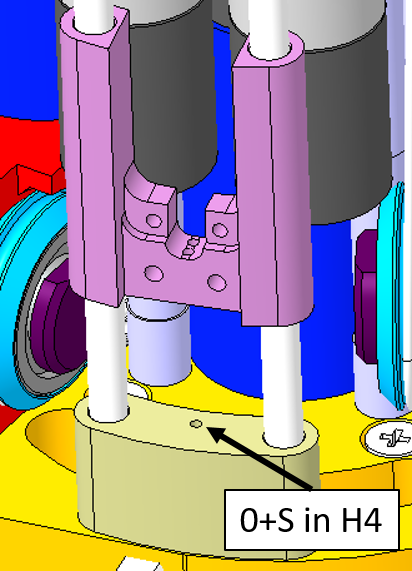 | Pass the cable with the 0+L sheath through the two motors under the slider, put a tensioner and the 0+S sheath and pass through the central hole of the Ergal part (cable should get out from H4), elbow side. At that moment the 2 sides of the cable get out, one from H4 and other side out of the Ergal part H5. |
 |
Now pass the cables inside the slider superior and inferior holes: from H5 to H7 and from H4 to H6. |
 |
Keeping straight the fingers with the piece of about 6 mm thickness inserted, tension the (0+S) cable and mark it with a pen, afterwards pull the slider backwards (the finger getting closed) and make a knot where there is the pen mark. |
| Close the fingers (electrically) with the motor providing ± 5.5 Volt and make the knot nearer than possible to the slider. |
3 Proximal Joints¶
3.1 Location¶
Below you can see the back views of the forearms (palm down). The motor positions are mirrored.
| LEFT FOREARM | RIGHT FOREARM |
|---|---|
 |
 |
| real pic | real pic |
If ever you realize that one of the following cable is broken bear in mind:
Tip
The start of the wiring for each proximal is identical (wiring around the motor pulley), the index and middle proximal joints are cabled exactly the same way, just the thumb is a bit trickier.
3.2 Cabling¶
3.2.1 Preparation¶
The minimum requirement to start recabling the proximal joints is:
| IITCODE | Alias | Description |
|---|---|---|
| 1815 | CG077063 | Stainless steel microcable, cable construction 7x7mm, nom. dia 0,63mm, not coated, AISI 316 |
3.2.1 Cabling of the motor pulley & fingers¶
Let' start with the cabling of the motor pulley.
| Pictures | step by step guide |
|---|---|
| Take 1 meter of IITCODE 1815 | |
| The following steps are common for the three fingers (index, middle, thumb). However, the holes for the thumb in the frame are slightly different (see next table). | |
  |
Turn the pulley in order to have the threads already facing (pointing toward) the holes inside the pink frame and the hole inside the pulley itself lying at horizontal. |
 |
insert the cable inside the pulley and equitably half the cable on both side of the pulley. |
| |
Respect the only one rule: 2 full turns around the pulley for the hole close to the ball bearing (blue cable) and 1 full turn for the part of the cable that will go into the hole the closest from the motor (red cable). |
Tip
YOU may need to use the cable , glue it a the tip (2 cm long) on both side. With a plier make 2 times 90 degree angles on the cable at about 3-4 mm from one another. see picture to manage to extract the cable once it passes in between the thread and the neck of the frame. !!!PICTURE NEEDED!!!!
Now we proceed with the cabling of the fingers.
| Pictures | step by step guide |
|---|---|
 |
After wrapping the cable on the pulley as shown before, insert the two cable extremities inside the frame holes for the Index & Middle. |
 |
For the thumb, the frame holes are designed inclined by 45 deg, therefore the cables will not enter the frame perpendicularly as the previous case. |
| Push the two sides of the cable inside the sheath (+) and (-) for each finger. | |
| The 2 sides of the cables should get out: | |
| For the Thumb: the cables exit from the base of the finger and enter inside two sheaths. | |
| 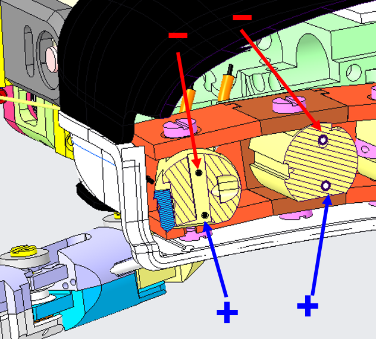 | For Index & Middle the cables exit at the base of their respective finger. |
| Final cabling: | |
| 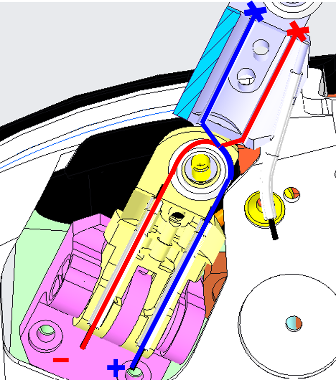 | For the Thumb, pass the cables around the pulley as shown. Start with the blue one. Fix the ends of the cables with a knot. |
| 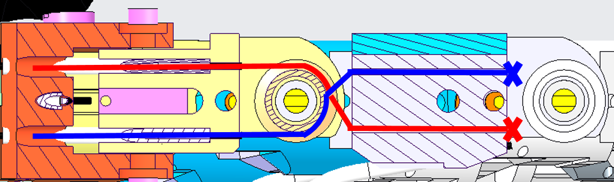 | Same procedure for the other fingers and make a knot at the end. |
| FINISHED!!! |
Tip
The final cabling is tricky. First, remember to CLOSE the tensioner of each cable before starting the cabling. If you leave the tensioners open, the cabling will not work. For making the final knot, put a mark on the blue cable and knot it. Slowly turn the motor CCW/CW while pulling the red extremity, ensuring that the cable is correctly running on the motor pulley. When the finger is completely closed pull the red cable and put a mark where the knot will be. Proceed by making the knot the closest to the mark. Finally, you can use the tensioners for removing the slack.